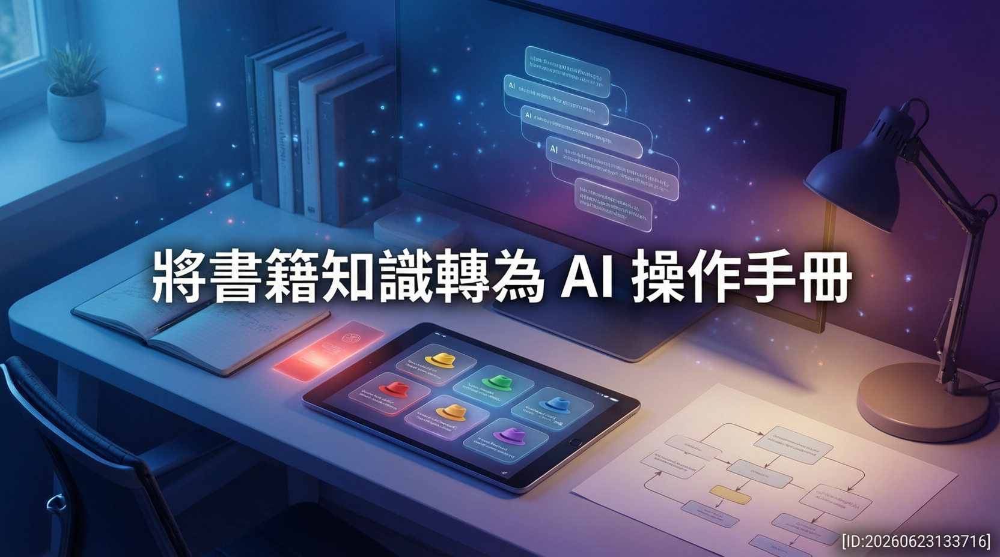

數據顯示，傳統閱讀模式正面臨知識留存率偏低的挑戰。本次研究提出創新解方，透過結構化提示詞工程，將經典管理學框架轉譯為 AI 可執行的模組化指令，重塑人機協作與決策輔助的應用典範。

在知識快速迭代與人工智慧技術迅速普及的當下，傳統單向閱讀模式往往難以跨越「理解」與「實踐」之間的斷層。業界觀察指出，資訊過載與缺乏反饋機制是導致學習成效打折的主要原因。本次報告深入探討將《六頂思考帽》平行思考法轉化為人工智慧代理（AI Agent）操作手冊的創新實踐。
專家分析認為，將抽象的認知模型結構化，能有效降低學習者的應用門檻。透過精準的提示詞設計，書中理念得以拆解為具備明確執行邏輯的 AI 協作模組，不僅大幅提升知識留存率，更提供一套可立即投入商業分析與日常決策的標準化流程。
研究指出，該操作手冊的核心在於將複雜的決策過程拆解為獨立運作的邏輯節點。系統運作時，各維度嚴格遵守其功能邊界，杜絕主觀臆測與無效辯論，確保分析過程具備客觀性與創新空間。具體執行機制如下：
本次研究同時針對不同技術環境提供對應的部署策略。即便組織尚未建置專屬 AI 代理工具，使用者仍可透過主流大型語言模型快速搭建相同框架。業界實務表明，僅需將標準化指引轉換為自訂系統提示詞，並搭配原始文件作為附件上傳，即可在對話介面中重現完整的思維導航體驗。
此設計大幅降低了技術應用的門檻，使個人知識管理工具不再受限於硬體或開發成本。透過反覆的虛擬情境測試與即時反饋，學習者能夠在安全環境中驗證決策可行性，逐步建立動態修正的個人知識系統。
未來職場技能培訓將持續向「人機協同」模式演進。將經典思維模型與 AI 技術結合，不僅能解決知識落地的難題，更能確保人工智慧在決策鏈中始終扮演思維擴充器的角色，而非取代人類核心判斷。
數據顯示，結合結構化框架與大型語言模型的應用，預計將成為提升組織決策效率的基礎設施。專家建議，使用者應持續優化指令架構，並將實作結果納入反饋循環。面對高度不確定的市場環境，掌握 AI 輔助思維導航技術，將是建構長期競爭優勢的關鍵要素。